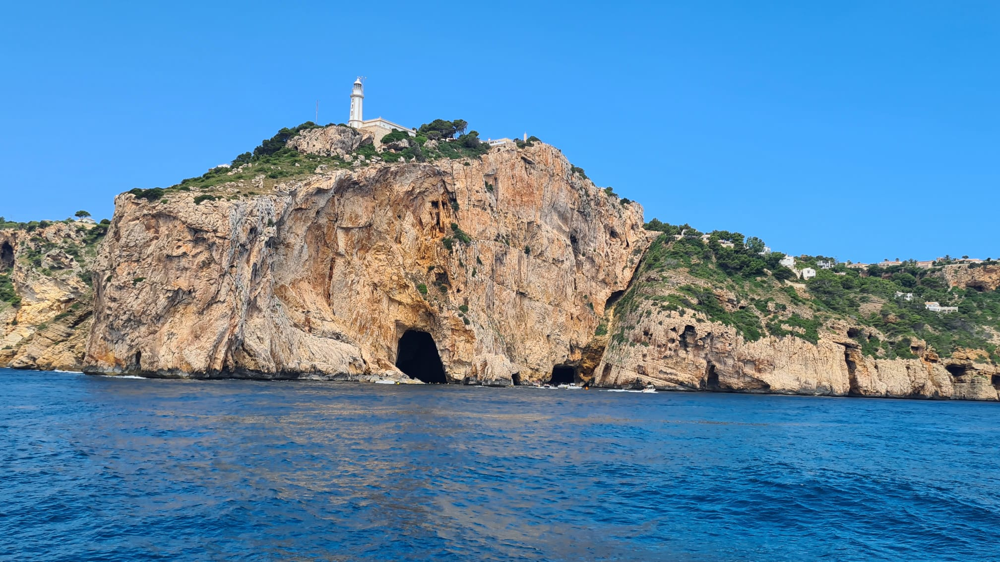

Te voy a contar algo divertido sobre mí:
Las playas y las montañas son mis lugares de desconexión y recarga de energías. Me encanta sentir la brisa y escuchar las olas del mar, contemplar el atardecer me transmite paz.
He tenido la oportunidad de conocer Ibiza y Denia, destinos que nos dejaron experiencias inolvidables. En un viaje en catamarán vimos delfines en su hábitat natural, un momento realmente espectacular.
Y la puesta de sol en Ibiza… simplemente no tiene precio, colores intensos, una calma absoluta.
La gastronomía es otra de mis pasiones. Conocer los platos típicos de cada lugar que visito, pero a la hora de estar en una playa lo mejor es un pescado frito con yuca y ensalada.
Y Aunque me encanta probar sabores, hay uno que siempre ocupa el primer lugar en mi corazón; el arroz chino de mi madre. No es solo un arroz, es tradición familiar y recuerdos que saben a casa.
